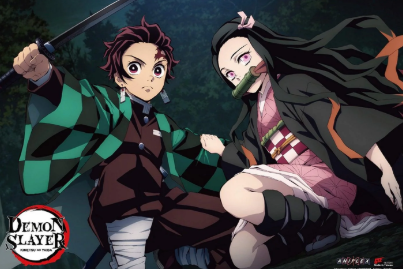

Demon Slayer: Kimetsu no Yaiba é uma obra japonesa criada por Koyoharu Gotouge. A história acompanha Tanjiro Kamado, um jovem de coração bondoso que se torna um caçador de demônios após sua família ser massacrada por Muzan Kibutsuji, o progenitor das criaturas, e sua irmã Nezuko se transformar em um demônio.
Apesar da transformação, Nezuko conserva traços da sua humanidade e sentimentos pelo irmão. Determinado a encontrar uma cura para a garota e vingar sua família, Tanjiro passa por um árduo treinamento para dominar as técnicas de respiração — como a Respiração da Água e a ancestral Dança do Deus do Fogo (Hinokami Kagura) — e entra para o Esquadrão de Caçadores de Demônios.
A história de Demon Slayer: Kimetsu no Yaiba se passa no Japão da Era Taisho e é estruturada através de arcos de evolução e combate:
Tanjiro Kamado sustenta sua família vendendo carvão nas montanhas. Certo dia, ao retornar para casa, encontra sua família massacrada por um demônio. A única sobrevivente é sua irmã caçula, Nezuko, que foi transformada em uma criatura demoníaca. Após resistir ao ataque inicial da irmã e provar ao caçador Giyu Tomioka que Nezuko mantém sentimentos humanos, Tanjiro é enviado para treinar com o mestre Sakonji Urokodaki.
Após anos de treinamento rigoroso para dominar a Respiração da Água e passar pela Seleção Final, Tanjiro torna-se oficialmente um caçador. Ele carrega Nezuko em uma caixa de madeira protetora durante o dia e começa a aceitar missões. No caminho, ele se une a dois companheiros de equipe: Zenitsu Agatsuma (mestre na Respiração do Trovão) e Inosuke Hashibira (criador da Respiração da Besta).
Criador: Koyoharu Gotouge
Gênero Ação, aventura, fantasia e sobrenatural
Publicação do primeiro mangá 15 de fevereiro de 2016
Estúdio do anime: Ufotable
A disponibilidade pode variar de acordo com a plataforma e a região.
© Projeto acadêmico - Demon Slayer